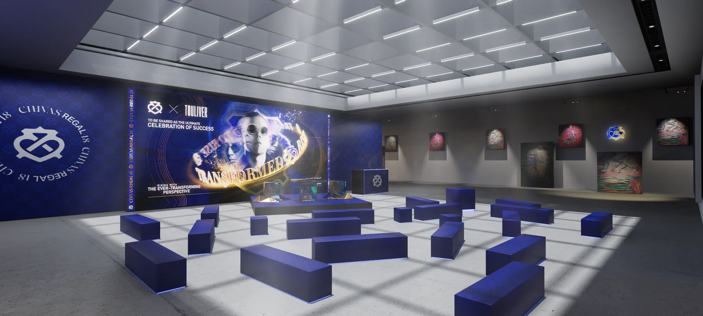
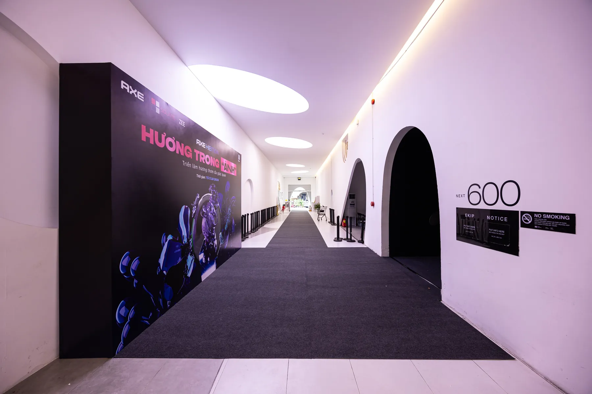

Studio 3D là gì và cách chọn cho đúng việc

Studio 3D là đơn vị làm ra hình ảnh và video bằng phần mềm ba chiều thay cho việc chụp và quay thật: ảnh sản phẩm, phim quảng cáo ngắn, phối cảnh sự kiện và key visual cho chiến dịch. Bạn thuê một studio 3D khi món cần chụp chưa tồn tại, khi bối cảnh dựng thật quá tốn, hoặc khi hình phải sửa nhiều vòng mà không thể dựng lại set mỗi lần. Nếu sản phẩm đã có mẫu hoàn thiện và bạn chỉ cần vài ảnh nền trắng, chụp thật thường nhanh hơn và rẻ hơn.
Bài này nói rõ một studio 3D nhận những nhóm việc gì, khác freelancer và agency ở đâu, cách đọc portfolio để biết họ tự làm hay làm hộ, sáu câu nên hỏi trước khi chốt, và những lúc bạn chưa cần thuê ai cả. Chúng tôi không nêu mức giá cụ thể vì giá đổi theo số shot và độ phức tạp bề mặt, nhưng sẽ nói thẳng những yếu tố làm giá tăng.
Studio 3D là gì và nhận những việc gì
Tên gọi nghe rộng, nhưng phần lớn công việc thực tế rơi vào bốn nhóm. Biết món của bạn thuộc nhóm nào giúp bạn hỏi đúng câu ngay từ email đầu tiên.
Render sản phẩm tĩnh
Ảnh một món hàng ở độ phân giải cao, dùng cho trang bán, bao bì, hồ sơ sản phẩm hoặc quảng cáo in. Đây là nhóm việc có tiêu chuẩn rõ nhất: hoặc bề mặt nhìn ra đúng chất liệu, hoặc không. Người xem nhận ra ngay khi nhựa trông như cao su, kể cả khi họ không gọi tên được lỗi.
Phim quảng cáo và hình động
Một shot hoặc một chuỗi shot có chuyển động camera, thường kèm hoạt hoá cơ cấu hoặc hiệu ứng vật liệu. Khối lượng công việc nhảy bậc so với ảnh tĩnh, vì mỗi giây là hai mươi tư tới ba mươi khung và mỗi lần sửa bố cục phải kết xuất lại cả đoạn. Các bước duyệt của một shot được mô tả cụ thể trong bài quy trình dựng TVC 3D.
Phối cảnh sự kiện và triển lãm
Dựng trước không gian để duyệt với khách hàng hoặc với ban tổ chức: vị trí gian hàng, hướng đi của khách, chiều cao màn hình, ánh sáng buổi tối. Giá trị lớn nhất của nhóm này không phải ảnh đẹp mà là phát hiện sai sót trước khi thi công. Một dạng kết quả cụ thể nằm ở trang dự án phối cảnh sự kiện 3D.
Key visual cho chiến dịch
Một hình chủ đạo dùng lại trên nhiều kênh, kéo theo nhiều tỉ lệ khung và nhiều phiên bản chữ. Đây là lúc 3D có lợi thế rõ rệt so với chụp: đổi tỉ lệ khung, đổi màu nền hoặc đổi góc nhẹ đều làm được từ cùng một bối cảnh đã dựng.
Studio 3D khác freelancer và agency ở chỗ nào
Khác biệt không nằm ở chất lượng hình, vì cả ba đều có người giỏi và người dở. Nó nằm ở ai chịu trách nhiệm khi hình chưa đạt và ai lo phần việc không ai muốn làm.
Một freelancer bán giờ làm của chính họ, nên bạn trả ít hơn và đổi lại bạn phải tự làm vai trò điều phối: gom bản vẽ, chốt tham chiếu, nhắc tiến độ. Một agency đầy đủ bán giải pháp trọn gói, lo cả ý tưởng và truyền thông, nên giá cao hơn và vòng phản hồi dài hơn. Một studio 3D nằm giữa: nhận trách nhiệm toàn bộ phần hình, có quy trình duyệt theo chặng, nhưng không nhận phần chiến lược truyền thông.
| Tiêu chí | Freelancer | Studio 3D | Agency trọn gói |
|---|---|---|---|
| Ai chịu trách nhiệm phần hình | Một người | Studio, có người phụ trách dự án | Studio thầu lại, agency đối soát |
| Phạm vi thường nhận | Một tới vài shot | Cả bộ hình của một món hoặc một sự kiện | Từ ý tưởng tới triển khai kênh |
| Quy trình duyệt theo chặng | Thường không có | Có, chia theo khối thô, vật liệu, kết xuất | Có, thêm vòng duyệt nội bộ |
| Rủi ro khi người làm biến mất | Cao nhất | Thấp, file nằm ở studio | Thấp |
| Thời gian phản hồi sửa | Phụ thuộc lịch một người | Trong ngày tới vài ngày | Dài nhất, qua nhiều lớp |
| Chi phí tương đối | Thấp nhất | Trung bình | Cao nhất |
| Hợp nhất khi | Bạn đã biết rõ mình muốn gì | Bạn cần cả bộ hình và một người chịu trách nhiệm | Bạn cần cả ý tưởng và kênh phân phối |
Bảng này không chọn hộ bạn. Nó chỉ nói một điều: freelancer bán giờ, studio bán trách nhiệm trên phần hình, agency bán việc điều phối toàn chiến dịch. Chọn sai lớp thì bạn trả tiền cho thứ mình không dùng tới.
Cách đọc portfolio của một studio 3D tại Việt Nam
Portfolio nào cũng chỉ trưng ảnh đẹp nhất, nên nhìn ảnh đẹp không nói lên gì nhiều. Ba cách dưới đây tốn của bạn mười phút và lọc được phần lớn rủi ro.
Xem cùng một món ở nhiều góc
Một món được trưng ở bốn năm góc khác nhau là bằng chứng rằng hình được dựng thật trong không gian ba chiều, không phải ghép từ ảnh có sẵn. Studio làm thật luôn có sẵn nhiều góc của cùng một dự án, vì đó là đầu ra bình thường của quy trình.
Xem phối cảnh có vật tham chiếu
Trong phối cảnh sự kiện, hãy tìm người, cửa, bậc thang hoặc bàn trong hình. Những thứ đó khoá tỉ lệ lại. Phối cảnh không có vật tham chiếu nào rất dễ nhìn hoành tráng trên màn hình rồi nhỏ bất ngờ khi thi công.
Hỏi một file gốc, không chỉ xem ảnh cuối
Câu hỏi đơn giản nhất và hiệu quả nhất: cho tôi xem ảnh chụp màn hình file gốc của một dự án. Người làm thật đưa được ngay. Cách đặt câu hỏi này giống cách chúng tôi khuyên người học kiểm tra nơi dạy, mô tả trong bài khoá học dựng hình sản phẩm.
Ảnh cuối cho bạn biết studio làm được gì một lần. File gốc cho bạn biết họ làm lại được bao nhiêu lần mà không phải dựng lại từ đầu.
Danh sách kiểm tra trước khi chốt studio 3D
Chạy qua danh sách này với bất kỳ đơn vị nào, kể cả với chúng tôi. Người làm nghề trả lời được hết, kể cả câu bất lợi cho họ.
- Báo giá có tách riêng số shot, phần hình động và số vòng sửa không?
- Một vòng sửa được định nghĩa thế nào, và vòng thứ bao nhiêu thì tính thêm?
- Các chặng duyệt là gì, và tôi được xem gì ở mỗi chặng?
- Đầu vào tối thiểu các anh cần từ tôi là gì: bản vẽ, mẫu thật, mã màu?
- Bàn giao gồm những định dạng nào, ở độ phân giải nào?
- File gốc và quyền sử dụng hình ảnh thuộc về ai, ghi ở đâu trong hợp đồng?
- Nếu trễ hạn do phía các anh thì xử lý thế nào?
Câu về định nghĩa một vòng sửa hay bị trả lời vòng vo nhất, và nó cũng là nguồn tranh chấp phổ biến nhất. Một báo giá tử tế ghi rõ số vòng kèm trong giá và mức tính thêm từ vòng tiếp theo. Dạng đầu ra mà khách trả tiền để nhận được liệt kê ở trang dịch vụ render 3D sản phẩm.
Quy trình làm việc với một studio 3D, từ brief tới file cuối
Quy trình tử tế chia việc thành các chặng có điểm duyệt, để sai sót bị bắt ở chặng rẻ chứ không ở chặng đắt.
Brief và tham chiếu
Nói rõ hình dùng ở đâu, khung nào, và ba ảnh tham chiếu mà bạn thấy đúng hướng. Một brief một trang có ba ảnh tham chiếu còn hữu dụng hơn một brief mười trang không có ảnh nào.
Khối thô và duyệt bố cục
Chặng này cho bạn thấy tỉ lệ, góc camera và vị trí các thành phần, chưa có vật liệu. Đây là chặng bạn nên khó tính nhất, vì sửa bố cục ở đây mất vài giờ, còn sửa sau khi đã làm vật liệu và ánh sáng mất vài ngày.
Vật liệu, ánh sáng và kết xuất thử
Bề mặt được gán chất liệu, đèn được đặt, và studio gửi bản kết xuất thử ở độ phân giải thấp. Phần lớn thời gian ở chặng này là chỉnh độ nhám và hướng đèn, không phải chọn màu.
Kết xuất cuối, hậu kỳ và bàn giao
Kết xuất ở độ phân giải thật, chỉnh tương phản và màu, rồi xuất đủ các tỉ lệ khung đã thống nhất. Hãy chốt danh sách tỉ lệ khung ngay từ brief, vì thêm một khung mới ở cuối nghe nhỏ nhưng kéo theo cả một vòng kết xuất.

Chi phí và thời gian, nói theo khoảng
Chúng tôi không nêu con số cụ thể ở đây vì giá đổi theo từng dự án và sẽ nhanh chóng lạc hậu. Nhưng bốn yếu tố dưới đây đẩy chi phí lên rõ nhất, và bạn kiểm soát được phần lớn chúng từ phía mình.
Số shot cuối cùng. Không phải số ảnh bạn muốn xem, mà số ảnh bạn thật sự sẽ dùng. Cắt danh sách này xuống là cách giảm chi phí hiệu quả nhất.
Độ phức tạp bề mặt. Kính, chất lỏng, kim loại xước và nhãn in trong suốt đều tốn thời gian hơn nhựa nhám nhiều lần.
Tĩnh hay động. Một shot hình động tốn nhiều hơn một ảnh tĩnh ở cả khâu dựng và khâu kết xuất, nên hãy quyết sớm chứ đừng thêm vào giữa dự án.
Số vòng sửa. Yếu tố này phụ thuộc vào phía bạn nhiều nhất. Gom phản hồi của mọi người liên quan thành một lần, thay vì gửi nhỏ giọt, là cách rút ngắn dự án mà không tốn thêm đồng nào.
Về thời gian, ước lượng từ các dự án chúng tôi đã làm là khoảng một tới hai tuần cho một bộ ba tới năm ảnh của món có hình khối rõ ràng, tính từ lúc nhận đủ bản vẽ và mẫu. Đây là ước lượng, không phải cam kết, và biến số lớn nhất luôn là số vòng duyệt nội bộ bên phía khách.
Thuê studio 3D hay dựng đội nội bộ
Nếu mỗi năm bạn cần vài bộ ảnh, thuê ngoài gần như luôn hợp hơn. Một đội nội bộ chỉ bắt đầu có lý khi khối lượng đủ đều để người làm không ngồi không, và khi bạn chấp nhận trả cả phần chi phí học của họ.
Có một hướng trung gian mà nhiều đội marketing chọn: giữ một người trong nhà làm được phần dựng khối và chỉnh sửa nhỏ, còn phần hình cuối thì thuê ngoài. Người đó không cần học hai năm, chỉ cần đi hết phần nền tảng, và hai hệ ở trang khoá học 3D Blender ghi rõ đầu ra từng tuần để bạn tự so với nhu cầu của mình. Phần chọn hướng trong cẩm nang học Blender cũng nói thẳng những việc một người tự học làm được và những việc chưa nên nhận.
Dù chọn hướng nào, điều cần nhớ là hình tốt không mua tách khỏi thời gian. Một studio 3D rút ngắn thời gian bạn đi sai đường và nhận trách nhiệm trên kết quả, nhưng vẫn cần bạn đưa đủ đầu vào và phản hồi đúng chặng.
Câu hỏi thường gặp về studio 3D
Studio 3D là gì, nói ngắn gọn?
Là đơn vị làm ra hình ảnh và video bằng phần mềm ba chiều thay cho việc chụp hoặc quay thật. Đầu ra thường là ảnh sản phẩm độ phân giải cao, phim quảng cáo ngắn, phối cảnh sự kiện hoặc key visual cho một chiến dịch. Đầu vào là bản vẽ kỹ thuật, mẫu thật, ảnh tham chiếu và một brief nói rõ hình sẽ dùng ở đâu.
Thuê studio 3D hay chụp ảnh thật thì hợp hơn?
Chụp thật hợp hơn khi sản phẩm đã có mẫu hoàn thiện, bối cảnh đơn giản và bạn chỉ cần vài ảnh. Studio 3D hợp hơn khi món chưa sản xuất xong, khi cần nhiều phiên bản màu hoặc nhiều tỉ lệ khung cho từng kênh, khi bối cảnh dựng thật quá tốn, hoặc khi hình phải sửa nhiều vòng.
Một studio 3D tại Việt Nam cần bao lâu cho một bộ ảnh sản phẩm?
Ước lượng từ các dự án chúng tôi đã làm là khoảng một tới hai tuần cho một bộ ba tới năm ảnh của món có hình khối rõ ràng, tính từ lúc nhận đủ bản vẽ và mẫu. Món nhiều chi tiết nhỏ hoặc cần hoạt hoá thì dài hơn, và phần khó dự đoán nhất luôn là số vòng duyệt bên phía khách. Các dự án tĩnh ở trang dự án render sản phẩm là dạng đầu ra tương ứng.
Chi phí thuê studio 3D phụ thuộc vào những gì?
Bốn yếu tố đẩy giá lên rõ nhất là số shot cuối cùng, độ phức tạp của bề mặt, việc hình tĩnh hay hình động, và số vòng sửa được bao gồm trong báo giá. Một báo giá tử tế luôn tách riêng bốn mục này để bạn biết mình đang trả cho cái gì.
Bản quyền file gốc thuộc về ai?
Điều này phải ghi trong hợp đồng chứ không mặc định. Thực tế phổ biến là khách nhận quyền sử dụng hình ảnh đầu ra, còn file gốc và thư viện vật liệu thuộc về studio, trừ khi hai bên thoả thuận mua riêng. Nếu bạn dự định sửa hình sau này bằng một đơn vị khác, hãy hỏi ngay từ vòng báo giá.
Nếu bạn đang có một món cần ra hình, gửi cho chúng tôi bản vẽ hoặc vài ảnh mẫu kèm một câu nói rõ hình sẽ dùng ở đâu. Chúng tôi sẽ nói thẳng nên làm 3D hay nên chụp thật, kể cả khi câu trả lời là bạn chưa cần thuê ai cả. Muốn xem cách chúng tôi làm việc trước khi hỏi giá thì trang studio visual 3D LXAM và các bộ ảnh ở dự án automotive là chỗ nên bắt đầu. Cần biết trước phải gửi gì và mất bao lâu thì đọc bài dịch vụ render 3D sản phẩm.
Đọc tiếp


Muốn được sửa bài trực tiếp?
Coaching 1:1 online, đồng hành trọn một năm. Để lại thông tin, tôi xem qua và tư vấn bạn nên bắt đầu từ đâu.
Đăng ký tư vấn